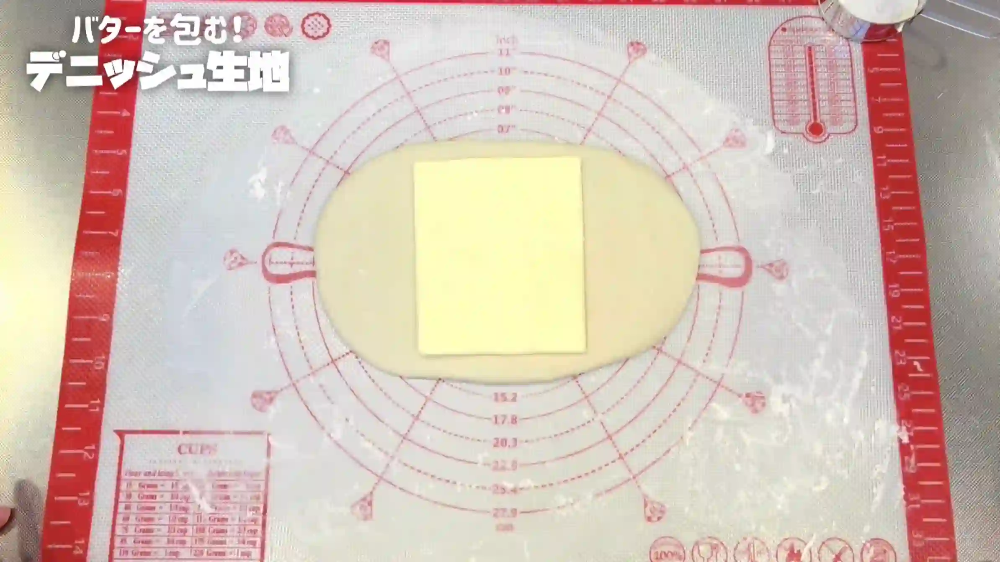
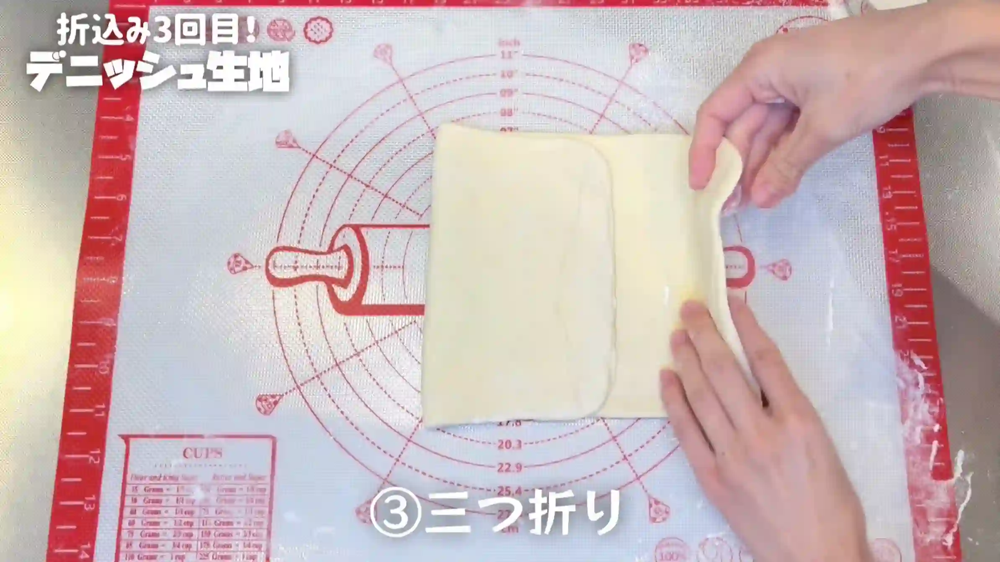
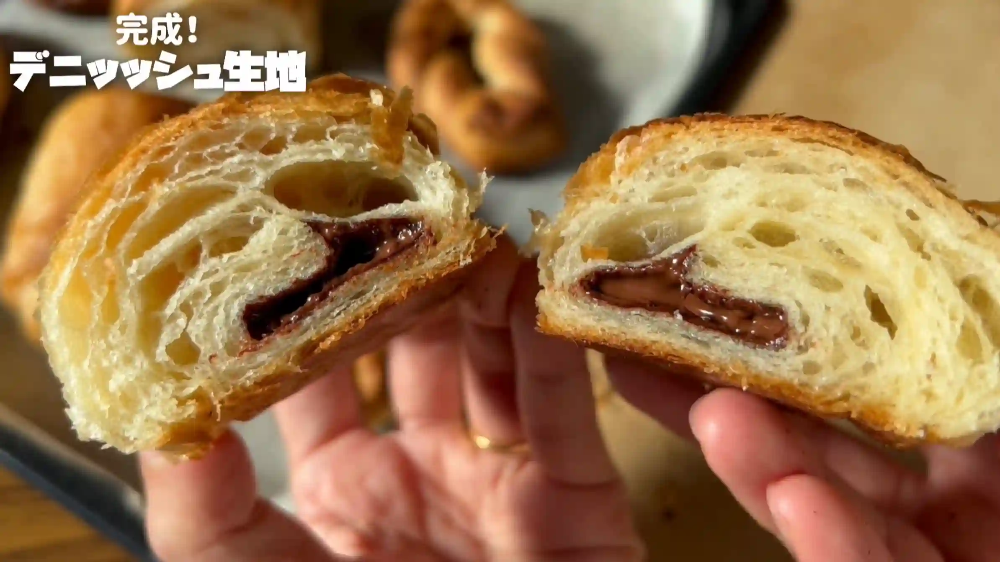

材料 6個分
※粉量を変えると自動計算されます
生地
折込用
作り方
生地
STEP 1
仕込み水を作る
ぬるま湯に砂糖とドライイーストを加え、よく混ぜ合わせます。
ぬるま湯に砂糖とドライイーストを加え、よく混ぜ合わせます。
STEP 2
粉類と仕込み水を混ぜ合わせる
強力粉、薄力粉、塩を混ぜ合わせ、仕込み水を加えてヘラで2分ほど混ぜます。粉気がなくなり、生地がひとまとまりになればOKです。
強力粉、薄力粉、塩を混ぜ合わせ、仕込み水を加えてヘラで2分ほど混ぜます。粉気がなくなり、生地がひとまとまりになればOKです。
STEP 3
バターを加え、手で4分捏ねる
バターを加え、手で4分ほど捏ねます。途中生地がベタついてきますが、ここでは生地をツルッとするまで捏ね上げる必要はなく、バターがなじめばOKです。短時間の「ちょい捏ね」で仕上げます。
バターを加え、手で4分ほど捏ねます。途中生地がベタついてきますが、ここでは生地をツルッとするまで捏ね上げる必要はなく、バターがなじめばOKです。短時間の「ちょい捏ね」で仕上げます。
STEP 4
室温で60分おく
乾燥しないようにラップをして、一次発酵させます。60分を目安に、生地がふっくらと膨らんだら次の工程へ進みます。発酵時間は室温によって変わるため、生地の状態を見ながら調整してください。
乾燥しないようにラップをして、一次発酵させます。60分を目安に、生地がふっくらと膨らんだら次の工程へ進みます。発酵時間は室温によって変わるため、生地の状態を見ながら調整してください。
STEP 5
バターシートを作る
STEP 6
生地を広げてバターシートを置く
生地をバターシートの約2倍の大きさまで伸ばし、中央にバターシートを置きます。折り込みの時に生地の端からバターがはみ出してこないようにするため、画像のように上下の生地にゆとりをもたせておくのがポイントです。
生地をバターシートの約2倍の大きさまで伸ばし、中央にバターシートを置きます。折り込みの時に生地の端からバターがはみ出してこないようにするため、画像のように上下の生地にゆとりをもたせておくのがポイントです。

STEP 7
生地でバターシートを包む
バターシートを生地で包み、つなぎ目をしっかり閉じます。バターがはみ出してしまうと、この後の折り込みがしにくくなるため、閉じ目をきちんと合わせておきます。
バターシートを生地で包み、つなぎ目をしっかり閉じます。バターがはみ出してしまうと、この後の折り込みがしにくくなるため、閉じ目をきちんと合わせておきます。
STEP 8
「縦1：横2」に伸ばす（[動画 09:20]）
生地を横長の向きに置き、まずは生地とバターを密着させるように、手でやさしく押して生地の厚みをそろえます。次にめん棒を縦方向にかけ、生地をならします。このときの縦を1として、横が2の比率になるよう、横方向に伸ばしていきます。細かい長さを測る必要はなく、1：2くらいの形になれば次の工程へ進みます。
生地を横長の向きに置き、まずは生地とバターを密着させるように、手でやさしく押して生地の厚みをそろえます。次にめん棒を縦方向にかけ、生地をならします。このときの縦を1として、横が2の比率になるよう、横方向に伸ばしていきます。細かい長さを測る必要はなく、1：2くらいの形になれば次の工程へ進みます。
STEP 9
三つ折りする（1回目）
伸ばした生地を三つ折りにします。ここで折り目をできるだけそろえると、層が整いやすくなります。
伸ばした生地を三つ折りにします。ここで折り目をできるだけそろえると、層が整いやすくなります。
STEP 10
「縦1：横2」に伸ばす
三つ折りした生地を、再び縦横の比率が1：2くらいになるまで伸ばします。折り込みを繰り返すため、生地が縮んできたら無理に伸ばさず、少しずつ形を整えていきます。
三つ折りした生地を、再び縦横の比率が1：2くらいになるまで伸ばします。折り込みを繰り返すため、生地が縮んできたら無理に伸ばさず、少しずつ形を整えていきます。
STEP 11
三つ折りする（2回目）
再び三つ折りにします。
再び三つ折りにします。
STEP 12
30分冷蔵する
生地をラップで包み、冷蔵します。冷やすことでバターが締まり、生地も扱いやすくなります。生地が縮んで伸ばしにくい場合は、無理に伸ばさず、しっかり冷やしてから次の工程へ進みます。
生地をラップで包み、冷蔵します。冷やすことでバターが締まり、生地も扱いやすくなります。生地が縮んで伸ばしにくい場合は、無理に伸ばさず、しっかり冷やしてから次の工程へ進みます。
STEP 13
「縦1：横2」に伸ばす
生地を、再び縦横の比率が1：2くらいになるまで伸ばします。冷やした生地が硬く伸ばしにくい場合は、中心からめん棒を押すようにして生地全体を満遍なく伸ばします。少しやわらかさが出てきたら、めん棒を転がすようにすると、生地をきれいに伸ばすことができるのでおすすめです。
生地を、再び縦横の比率が1：2くらいになるまで伸ばします。冷やした生地が硬く伸ばしにくい場合は、中心からめん棒を押すようにして生地全体を満遍なく伸ばします。少しやわらかさが出てきたら、めん棒を転がすようにすると、生地をきれいに伸ばすことができるのでおすすめです。
STEP 14
三つ折りする（3回目）
三つ折りにして、最後の折り込みを行います。
三つ折りにして、最後の折り込みを行います。

STEP 15
生地を伸ばし、成形する（[動画 16:29]）
生地を好みの形に伸ばして成形します。ここまでくると、生地に硬さが出てかなり伸ばしにくくなっていますが、少し時間をかけても良いので、ゆっくり全体の厚みが均一になるように伸ばしていきます。動画ではクロワッサンとパンオショコラを作っています。こちらもぜひご覧ください。
生地を好みの形に伸ばして成形します。ここまでくると、生地に硬さが出てかなり伸ばしにくくなっていますが、少し時間をかけても良いので、ゆっくり全体の厚みが均一になるように伸ばしていきます。動画ではクロワッサンとパンオショコラを作っています。こちらもぜひご覧ください。
STEP 16
生地を天板にのせ、室温で90分おく
乾燥しないようにラップをして二次発酵させます。90分を目安に、生地がふっくらと膨らんだら次の工程へ進みます。一度冷やしているため、生地の状態を見ながら、ゆっくり時間をかけて発酵させるのがおすすめです。
乾燥しないようにラップをして二次発酵させます。90分を目安に、生地がふっくらと膨らんだら次の工程へ進みます。一度冷やしているため、生地の状態を見ながら、ゆっくり時間をかけて発酵させるのがおすすめです。
STEP 17
オーブンを210℃に予熱する
焼成前にオーブンを210℃までしっかり予熱しておきます。
焼成前にオーブンを210℃までしっかり予熱しておきます。
STEP 18
オーブン210℃で17分焼く
表面がきつね色になるまで焼きます。焼き時間は目安とし、焼き色を確認しながら、ご家庭のオーブンに合わせて調整してください。
表面がきつね色になるまで焼きます。焼き時間は目安とし、焼き色を確認しながら、ご家庭のオーブンに合わせて調整してください。

バターシート
STEP 1
バターを10g×6枚に切る
バターを10gずつ6枚に切ります。市販のバターに入っている目盛りを目安にすれば、細かく計量しなくても大丈夫です。
バターを10gずつ6枚に切ります。市販のバターに入っている目盛りを目安にすれば、細かく計量しなくても大丈夫です。
STEP 2
ラップにバターを並べてぴったり閉じる
バターをラップの上に長方形になるよう並べます。バターがはみ出さないよう、並べた大きさに合わせてラップをぴったり閉じます。
バターをラップの上に長方形になるよう並べます。バターがはみ出さないよう、並べた大きさに合わせてラップをぴったり閉じます。
STEP 3
めん棒で平らにならし、冷蔵する
めん棒で押しながら、バター同士のつなぎ目がなくなるようにならします。大体手のひらサイズの長方形になればOKです。冷蔵して、折り込みやすい硬さに整えておきます。
めん棒で押しながら、バター同士のつなぎ目がなくなるようにならします。大体手のひらサイズの長方形になればOKです。冷蔵して、折り込みやすい硬さに整えておきます。
動画でチェック
おいしく作るためのワンポイントコラム
「折り込みや温度管理が難しそう…」というイメージがある『デニッシュ生地』。今回ご紹介するおなおオリジナルの折り込み方法は、長さを細かく測らず「伸ばす比率」を覚えるだけなので驚くほど簡単！初めてデニッシュ作りにチャレンジする方にも自信を持っておすすめできるレシピです。憧れのクロワッサンやパン・オ・ショコラも手軽に焼けるようになる、デニッシュ生地作りの「3つのコツ」をご紹介します。
① サクサク感と扱いやすさを生む粉の配合
軽やかな食感と生地の扱いやすさを両立させるため、粉は強力粉2：薄力粉1の割合でブレンドするのがポイント！薄力粉を混ぜることでグルテンの張りがほどよく抑えられ、生地がぐんと伸ばしやすくなって折り込み作業が楽になります。今回使っているのは『ニップン 強力小麦粉』と『star select（プライベートブランド）の薄力小麦粉』。その他の材料もスーパーで手軽に購入できるものばかりを使っていますが、出来上がりはパン屋さん級です！
② 測らないバターシートと包み方のコツ
折り込み用のバターシートを作るとき、定規で正確なサイズを測る必要はありません！大きめに広げたラップの上に、薄切りにしたバター（約10g）を6枚、長方形になるよう並べて包むだけでOK。大体手のひらサイズの長方形になっていれば多少の誤差は問題ありません。また、生地でバターシートを包む際はあえて端に少し隙間をあけて包むのが最大のポイント！遊びを作っておくことで、伸ばすときのバターのはみ出しを綺麗に防ぐことができます。
③ 『1：2』の比率で覚える折り込みのコツ
生地を伸ばして折り込む工程も「〇cmまで伸ばす」といった計測は一切不要！めん棒で生地を平らにしたら、『縦1：横2』の比率になるよう横方向に伸ばしていきます。この「1：2まで伸ばして三つ折り」という作業を3回繰り返すだけで、長さを測らなくても綺麗な層が誕生します。
折り込み作業って、慣れないうちは「次はどっちの向きにするんだっけ？」「何cmまで伸ばすの？」と迷ってしまいますよね。私も昔は手を粉まみれにしながら、スマホで動画を何度も巻き戻して苦労していました。でも、この「縦1：横2」の比率さえ覚えてしまえば、驚くほど手軽にデニッシュ生地が作れるようになります！ぜひ一度、気軽にチャレンジしてみてください。
① サクサク感と扱いやすさを生む粉の配合
軽やかな食感と生地の扱いやすさを両立させるため、粉は強力粉2：薄力粉1の割合でブレンドするのがポイント！薄力粉を混ぜることでグルテンの張りがほどよく抑えられ、生地がぐんと伸ばしやすくなって折り込み作業が楽になります。今回使っているのは『ニップン 強力小麦粉』と『star select（プライベートブランド）の薄力小麦粉』。その他の材料もスーパーで手軽に購入できるものばかりを使っていますが、出来上がりはパン屋さん級です！
② 測らないバターシートと包み方のコツ
折り込み用のバターシートを作るとき、定規で正確なサイズを測る必要はありません！大きめに広げたラップの上に、薄切りにしたバター（約10g）を6枚、長方形になるよう並べて包むだけでOK。大体手のひらサイズの長方形になっていれば多少の誤差は問題ありません。また、生地でバターシートを包む際はあえて端に少し隙間をあけて包むのが最大のポイント！遊びを作っておくことで、伸ばすときのバターのはみ出しを綺麗に防ぐことができます。
③ 『1：2』の比率で覚える折り込みのコツ
生地を伸ばして折り込む工程も「〇cmまで伸ばす」といった計測は一切不要！めん棒で生地を平らにしたら、『縦1：横2』の比率になるよう横方向に伸ばしていきます。この「1：2まで伸ばして三つ折り」という作業を3回繰り返すだけで、長さを測らなくても綺麗な層が誕生します。
折り込み作業って、慣れないうちは「次はどっちの向きにするんだっけ？」「何cmまで伸ばすの？」と迷ってしまいますよね。私も昔は手を粉まみれにしながら、スマホで動画を何度も巻き戻して苦労していました。でも、この「縦1：横2」の比率さえ覚えてしまえば、驚くほど手軽にデニッシュ生地が作れるようになります！ぜひ一度、気軽にチャレンジしてみてください。


スーパーの手頃な材料で作る『デニッシュ生地』のレシピです。おなおオリジナルの簡単な折り込み方法で、初めて作る方にもとってもおすすめ！レシピでは、この生地を使って作るクロワッサンとパンオショコラの作り方も紹介しています。